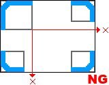

プレビュー時にエラーが出ます。
フレームに使用する画像の状態によっては、プレビュー時にMCS通信エラーが出て、プレビューが中止されることがあります。
フレームで使用する画像の指定枚数が、1枚指定で1枚も画像ファイルを指定していない場合、
もしくは、4枚指定で3枚以下の画像ファイルしか指定していない場合は、
プレビュー時に、MCS通信エラーが出てプレビューが中止されます。
このエラーが出た場合、指定枚数の画像ファイルを各隅に正しく割り当ててください。
画像の4枚指定モードで、縦方向、もしくは横方向で、並べた画像の大きさに差があった場合、
プレビュー時に、MCS通信エラーが出て、プレビューが中止されます。
このエラーが出た場合は、画像のサイズを調整し直し、縦横方向で画像サイズに差がないようにしてください。
|  | |
| 縦横の並びで画像のサイズにズレがあると、 プレビュー時にエラーが出ます。 |
縦横の画像サイズをそろえてください。 |